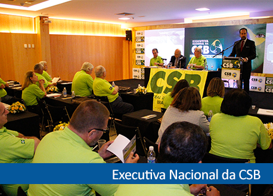
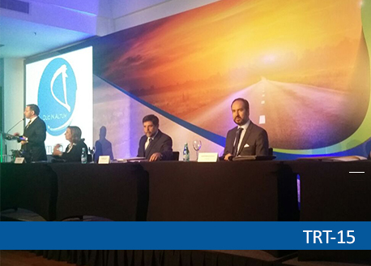
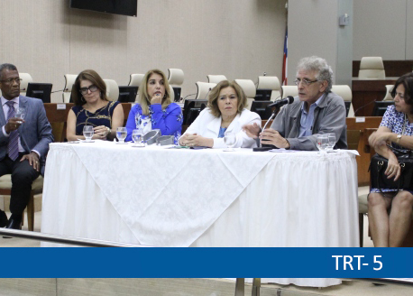
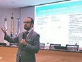

Últimos Eventos
TRT da Bahia promove o 4º Encontro sobre Acessibilidade com a participação de Lars Grael. Saiba mais...

Palestra com Prof. Gáudio Ribeiro na Executiva Nacional da CSB: Conjuntura internacional e desafios para o movimento laboral. Saiba mais...

Prof. Gáudio Ribeiro de Paula e Ministros do TST discutem polêmicas do Direito Sindical em seminário realizado no TRT-15. Saiba mais...

'Mulheres continuam sofrendo ataques sistemáticos', afirma Contardo Calligaris. Saiba mais...
TRT da Bahia promove o 4º Encontro sobre Acessibilidade com a participação de Lars Grael. Saiba mais...
Notícias
Entrevista sobre abusos domésticos
Entrevista do professor Gáudio Ribeiro de Paula, Presidente do Instituto DIA, ao Jornal da Justiça sobre o tema "Abusos Domésticos".

Impactos do novo CPC na Justiça do Trabalho
Aula presencial e por vídeo. Conferência sobre o tema "Panorama geral dos impactos do novo CPC na Justiça do Trabalho".Intervenção da Justiça do Trabalho nas Relações Sindicais
Ministro Douglas Alencar (TST) ministra palestra sobre o tema "Intervenção da Justiça do Trabalho nas Relações Sindicais".
Facebook
Vídeos